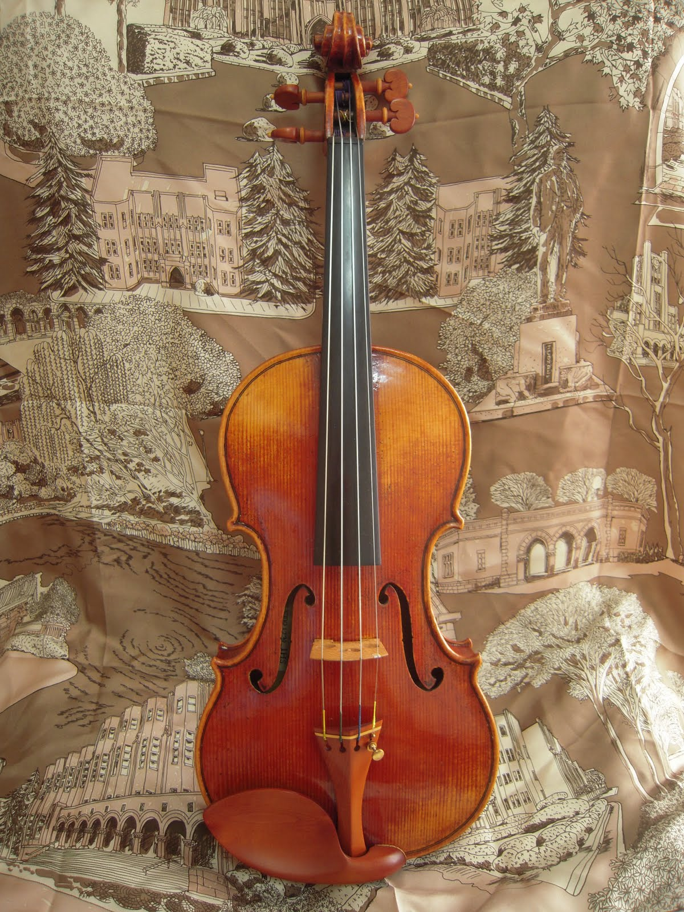
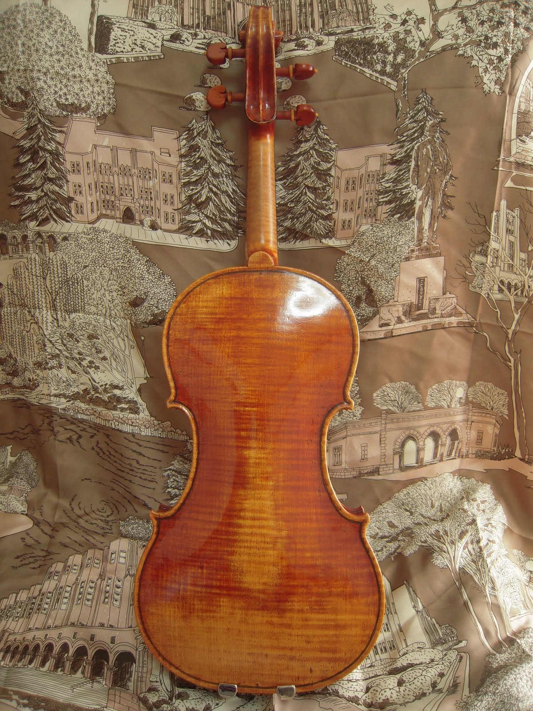

下は、現在メインとして弾いている楽器で、日本製の新作です。明るくつややかな音がよく響き、特に中低音のあたたかく深みのある音色が気に入っています。 この他に、高校生のときに購入して15年近く弾いたフランス製のオールドも持っています。こちらは音量は大きくありませんが、ソフトで落ち着いた音色が特徴的です。
|  |  |
同じバイオリンでも、楽器によってサイズや形状が微妙に違います。そのため、楽器を買い替えてから弾き心地に慣れるまでずいぶん時間がかかりました。特に、最初のうちはE線のハイポジションが全然響かず、鳴るようになるまで苦労しました。
木製のものとカーボン製のものを持っています。 カーボン弓の良さは、何といってもその操作性と費用対効果の高さです。 近年はフェルナンブーコ材が不足しており、良質な木製弓は非常に高価になっています。 バランスの良さとコシの強さに関しては、カーボン弓はそれよりはるかに高価な木製弓にも引けを取りません。 また、木製弓と異なり、湿度の影響を受けにくい上に非常に丈夫です。
一方で、音色に関していえば圧倒的に木製弓に軍配が上がります。 もちろん弓のグレードにもよるのでしょうが、木製弓で出した音の方が気品と迫力を兼ね備えており、表情豊かです。 大きな音で弾いても耳が疲れず、音を出すことに喜びを覚えます。 また、カーボン弓と違って一本一本に個性があり、選ぶ楽しみがあります。 数年来カーボン弓を使い続けてきたのですが、少し前から主に木製弓を使うようになりました。
最も気に入っているのは、ピラストロ社のViolinoです。 使っている人をほとんど見たことがないのですが、張り替えたあと少したって落ち着いてくると、何ともいえない上品な音色がします。 もう10年は使い続けています。 ただ、時々シンプルな音が無性に恋しくなることがあり、そういうときはトマスティーク社のDominantを張ります。 以前の楽器ではTonicaやEvah Pirazziを使っていたこともあります。 個人的にはLarsenも最近気になっているのですが、なかなか張る勇気が出ません。
[追記] Larsen Tziganeを試してみました。個人的にはもう少ししっとりとした音の方が好きです。 なお、試しついでにEudoxaも張ってみましたが、年中ジメジメと湿度の高い土地には合わないようです…。
E線はGoldbrokatやHillを使っています。 同じピラストロ社のOliveを使っていた時期もありましたが、どういうわけか開放弦で弾いたときに音がよくひっくり返るので今は使っていません。
中学生の時に大人用サイズの楽器に買い替えてから、ずっと肩当てを使ってきました。 しかし、肩当てを使うことで楽器を首と肩でがっちり固定する癖がつくようになってしまい、おそらくそれが原因でひどい首肩のこりや背中の痛みに悩まされるようになってきました。 そこで、思い切って肩当てを使わないことにしました。
最初は、肩当てがないと楽器が不安定になるため、落ちないように押さえることで左肩や左手の負担が増えるかと思っていました。 しかし、肩当てなしでは力が入っているとポジション移動やヴィブラートがままならないため、必然的に脱力するようになりました。 少なくとも、同じ場所にずっと力が入っているということはなくなって、首と肩の負担は以前よりも明らかに減りました。 逆に言うと、肩当てをつけていた時は、かなり力が入って首と肩がこわばっていた状態でもなんとか弾けていたということです。 また、楽器が自由に動くことで弦の振動を右手でより感じられるようになったため、弓の配分や速度などボウイングにもよい影響があったと思います。 むろん、左手の自由度が減ったことでまだまだ不自由なことも多いのですが、もう少し続けてみるつもりです。
[追記] 一年くらい続けた結果、肩当てなしでもだいぶ自然に弾けるようになりました。ただ、ポジションの下降とG線のヴィブラートにまだ課題があります。
以下のような練習メニューを組んでいます。スケールや重音などは、C-durから始めて順番に調性を移動していきます（C-dur、A-moll、F-dur、D-moll、…）。 基本的には「難しい技術も単純な技術の組み合わせで習得できるようになる」という考えに立っています。一見手も足も出なそうなフレーズも、いくつかの単純な要素に分解して練習することで比較的楽に弾けるようになると考えており、そのためにエチュードを利用した基礎的な練習をたくさんこなすことにしています。
エチュードは基本的にメトロノームを使用し、自分の耳で音をしっかりと聴くことができかつ運動をコントロールできるようなゆっくりとしたテンポで練習します。 課題曲に移るまで、少なくとも30分以上は基礎練習とエチュードに費やします。 学生時代はもっとたくさんエチュードをこなしていましたが、社会人になってずいぶん量を減らしました。 いろいろな教則本を手当たり次第弾くのではなく、自分に合ったものを何度も繰り返し練習しています。 課題曲については、自分が弾きたいと思ったもので少し技術的には難しいと感じるようなものをチョイスし、時間をかけて練習しています。
お気に入りの演奏家を挙げておきます。正統的な解釈を美しい音色で聴かせる人が好みなようです。(違っていたらすみません。)